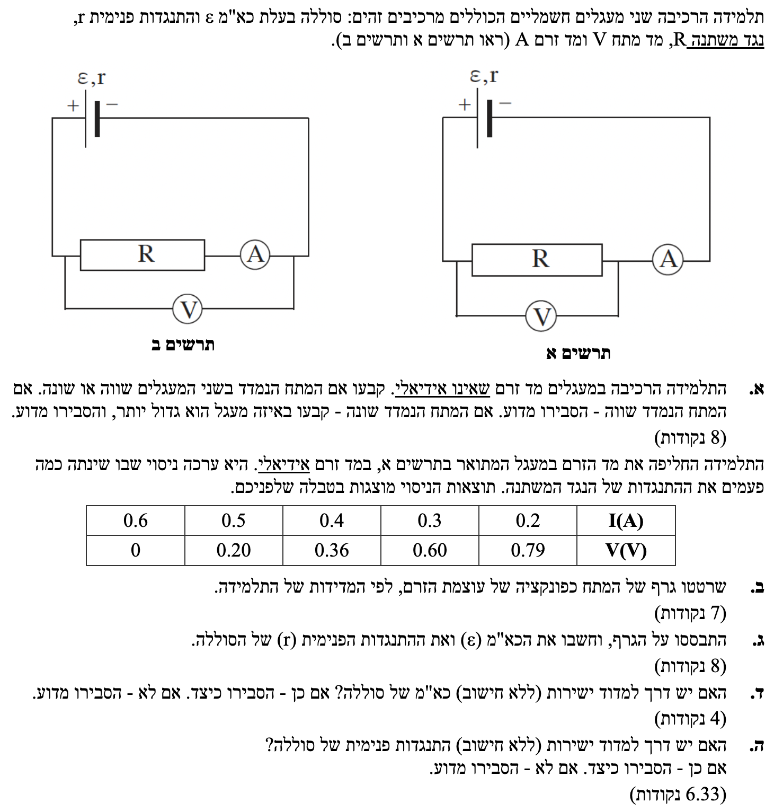
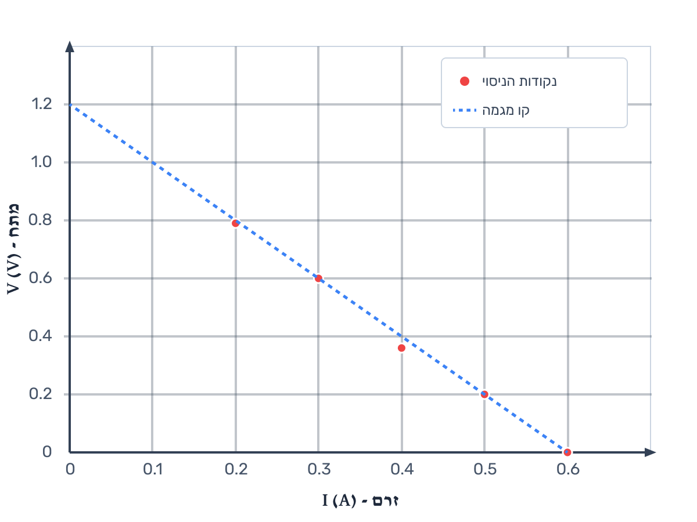

ניתוח מעגלים והשוואת מדידות, סרטוט וניתוח גרף מתח-זרם, מדידה ישירה מול עקיפה של כא"מ והתנגדות פנימית.

תארו לעצמכם שאתם רוצים למדוד את מהירות זרימת המים בנהר, ולשם כך אתם מכניסים למים גלגל כפות ענק. הגלגל אמנם מודד את הזרימה בצורה מדויקת, אך מעצם נוכחותו בתוך המים הוא מהווה מכשול שמפריע לנהר ומאט את המים! כדי לקבל את המהירות האמיתית של הנהר, היינו זקוקים לחיישן "קסום" שלא מפריע לזרימה כלל.
בפיזיקה, גם מכשיר אידיאלי וגם מכשיר שאינו אידיאלי (מעשי) הם מכשירים תקינים לחלוטין. שניהם מודדים את האמת ומראים בדיוק את מה שהם "מרגישים". ההבדל המהותי ביניהם נעוץ בשאלה האם עצם החיבור שלהם משנה את המעגל שאותו הם מודדים.
בשאלה שלנו, שמו לנו בתרשים ב' מד זרם שאינו אידיאלי (כלומר, יש לו התנגדות פנימית \( R_A \)). המשמעות היא שהוא מייצר הפרעה מסוימת (יש לנו התנגדות \( R_A \)) שמשנה את חלוקת המתחים במעגל ונופל עליו מתח. כהכנה להמשך – שימו לב שבסעיף הבא (ב') יחליפו אותו למד זרם אידיאלי, בדיוק כדי לבטל את ההפרעה הזו ולפשט עבורנו את הניסוי!
נשתמש בחוק אוהם כדי להביע את המתח הנמדד, ובעיקרון שלפיו מד מתח מודד את הפרש הפוטנציאלים בין שתי הנקודות אליהן הוא מחובר.
ראשית, נשים לב שההתנגדות הכוללת של המעגל (החיצונית והפנימית) זהה בשני המעגלים:
מכיוון שההתנגדות הכוללת שווה וכא"מ הסוללה זהה, הזרם הראשי \( I \) הזורם בשני המעגלים הוא זהה.
כעת, ננתח מה מודד מד המתח בכל אחד מהמעגלים:
מכיוון שההתנגדות של מד הזרם גדולה מאפס (\( R_A > 0 \)), ברור כי ההתנגדות עליה נמדד המתח בתרשים ב' גדולה יותר.
המתח הנמדד בשני המעגלים אינו שווה. המתח הנמדד בתרשים ב' גדול יותר.
עקרונות בניית גרף פיזיקלי: קביעת צירים עם יחידות מידה, חלוקת שנתות שווה, סימון נקודות הניסוי, והעברת קו מגמה שעובר קרוב ככל האפשר לכל הנקודות.
נסמן את הנתונים על מערכת צירים. ציר אופקי (x) יייצג את הזרם \( I(A) \) וציר אנכי (y) יייצג את המתח \( V(V) \). הנקודות הן: \( (0.6, 0) , (0.5, 0.20) , (0.4, 0.36) , (0.3, 0.60) , (0.2, 0.79) \).

ניצור קשר (אנלוגיה) בין המשוואה הפיזיקלית המתארת את מתח ההדקים של הסוללה למשוואה המתמטית של קו ישר.
מד המתח (האידיאלי) מחובר בתרשים א' במקביל לנגד \( R \). אולם, כיוון שמד הזרם כעת מוגדר כאידיאלי (התנגדותו אפס), הפרש הפוטנציאלים על הנגד \( R \) זהה להפרש הפוטנציאלים על הדקי הסוללה. כלומר, משוואת הגרף היא משוואת מתח ההדקים:
נסדר את המשוואה בצורה מפורשת של קו ישר כדי לראות את האנלוגיה:
מכאן נוכל ללמוד שני דברים מהגרף:
חישוב הכא"מ (\( \varepsilon \)):
נאריך את קו המגמה עד לחיתוך עם ציר ה-y (כאשר הזרם \( I = 0 \)). לפי קו המגמה שהעברנו, קל לקרוא מתוך הגרף שהחיתוך מתרחש ב-\( V = 1.2 \text{ V} \).
חישוב ההתנגדות הפנימית (\( r \)):
כדי לחשב את השיפוע, עלינו לבחור שתי נקודות שנמצאות בדיוק על קו המגמה. נבחר את נקודת החיתוך שמצאנו \( (0, 1.2) \). כנקודה שנייה, נחפש נקודה מהטבלה שיושבת במדויק על הקו. כדי להקטין שגיאות חישוב, תמיד נעדיף נקודה רחוקה ככל האפשר מהראשונה - לכן נבחר בנקודה \( (0.6, 0) \).
מכיוון ש- \( m = -r \), הרי ש:
התוצאות הן: \( \varepsilon = 1.2 \text{ V} \) ו- \( r = 2 \ \Omega \).
עיקרון הפעולה של מד מתח אידיאלי: התנגדותו אינסופית, ולכן כאשר הוא מחובר לבדו, לא זורם זרם במעגל.
התשובה היא כן.
נסתכל על משוואת מתח ההדקים של הסוללה: \( V_{ab} = \varepsilon - I \cdot r \).
כדי שמד המתח יציג בדיוק את הערך של הכא"מ (\( \varepsilon \)), אנו צריכים שהאיבר \( I \cdot r \) יתאפס. מכיוון שההתנגדות הפנימית \( r \) אינה אפס (כפי שראינו), הדרך היחידה לאפס איבר זה היא לאפס את הזרם במעגל (\( I = 0 \)).
כיצד עושים זאת בפועל? נחבר מד מתח אידיאלי ישירות להדקי הסוללה מבלי לסגור שום מעגל אחר (כלומר, ננתק את הסוללה מהנגד וממד הזרם). מכיוון שמד מתח אידיאלי מתאפיין בהתנגדות אינסופית, הזרם היוצא מהסוללה יהיה אפסי (\( I \approx 0 \)).
במצב זה, המתח הנמדד יהיה:
כן. ניתן למדוד ישירות על ידי חיבור מד מתח אידיאלי ישירות להדקי הסוללה כשהיא אינה מחוברת למעגל סגור (מצב של זרם אפס).
התשובה היא לא.
ההתנגדות הפנימית של סוללה אינה רכיב נפרד (כמו נגד רגיל) שמולחם לחוט בתוך קופסה. זוהי תכונה אינהרנטית (פנימית ובלתי נפרדת) של החומרים הכימיים והאלקטרודות המרכיבים את הסוללה עצמה.
מכשיר למדידת התנגדות (אוהם-מטר) עובד על ידי הזרמת זרם זעיר משלו דרך הרכיב ומדידת מפל המתח עליו. אי אפשר לחבר מכשיר כזה "רק ל-\( r \)" משום שכל חיבור לסוללה יכלול בהכרח גם את מקור הכא"מ (\( \varepsilon \)) עצמו, אשר יתנגש עם פעולת מד ההתנגדות וישבש לחלוטין את המדידה.
לכן, הדרך היחידה לקבוע את ערכו של \( r \) היא בצורה עקיפה: על ידי מדידת מתחים וזרמים במצבים שונים, כפי שעשינו בניסוי בסעיפים ב'-ג'.
לא. ההתנגדות הפנימית היא תכונה בלתי נפרדת מהסוללה ולא ניתן לבודד אותה פיזית ממקור הכא"מ כדי למדוד אותה ישירות במד-התנגדות.